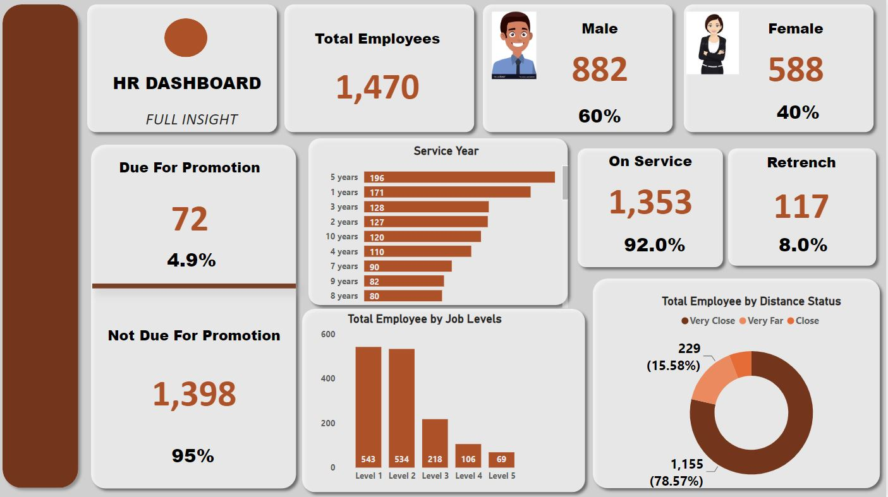

Built an interactive Hotel booking and Profit dashboard of Festmen Hotel. Performed analysis on how booking were generated in the hotel between 2010 and 2019 to determine the total profit of the Hotel and the to know the destination country with highest customer along with comparison from previous year. Across all 5 Destination Country, Total Customer ranged from 3,391 to 3,447. Total Booking started trending up on 2014, rising by 60.90% (3,596) in 5 years. Total Profit jumped from 173,011 to 407,590 during its steepest incline between 2014 and 2019.
At 3,447, New Zealand had the highest Total Customer and was 1.65% higher than China, which had the lowest Total Customer at 3,391.

The first dashboard Analysis for income sources:
• dynamic web chart analyzes in detail all sources of income and the percentage of each source and highlights the source with the highest value.
• a Creative Doughnut chart showing the achieved percentage from the target.
• dashboard title and description
• Total Income amount and the target
• a line chart Income by months
• Total counts and percentage of Income Sources items.
• Average of monthly income
• a Bar chart showing the Monthly operating profits and the total amount
• analyzing for two types of Marketing strategies.
• All these values are controlled and changed based on the year selection of the slicer.
The Second dashboard analyzes the total profits by countries:
• Creative design for a dynamic map chart.
• analyze the profit value from each country, With highlights for the most profitable country.
• Details of various types of taxes
• The percentage of profits achieved using a doughnut chart with circular edges.
• Fully controlled by yearly slicer
This is an Attrition analytics Dashboard built on Tableau . The working of the dashboard is demonstrated below. The dashboard mainly focuses on the attrition of employees while displaying information like the active employee count, job satisfaction of employees depending on the job role, etc. The dashboard includes 5 KPIs and a variety of graphs (bar chart, pie chart, lollipop chart, histogram, and donut chart) and filters for visualizing the required data.
This is an HR Analytics data dashboard showing the total number of employees in the organization which are categorized into Male and female, their various departments, the employees Job satisfaction, the number of service year by each employee, the job levels of each of the employees, those that are due for promotion, their distance to the organization, the total number of employees on service and those that will be lay off. The visualizations was done using bar chart, clustered bar chart, stacked bar chart and also a donought pie chart.

In this project, I used SQL SERVER to clean and transform housing raw data in order to make it usable for analysis.
The data used for this project was the Nashville Housing Dataset, and this is what was done with the data:
1. Cleaned the Data.
2. Standardized date format using CONVERT.
3. Broke out Addresses into individual columns (Address, City, State) using SUBSTRING and PARSENAME.
4. Removed duplicates.
5. Deleted unused columns.
This project was really eye-opening, and it's great how in just a day I've been able to learn both how to explore and clean data with SQL.